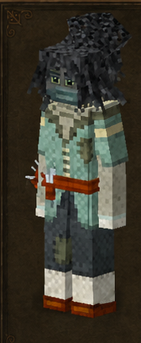
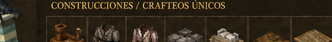

Sastre
Tailor · código oficial
tailor · ficha 14/16
Rasgos: 8
Bonus: 10
Malus: 6
Recetas: 55

Resumen humano
textil/equipo. Su mayor peligro objetivo es el frío.
Esta línea es interpretación funcional breve; lo importante son los números y recetas de abajo.
Bonus objetivos
- ahorro de durabilidad de cuchillo: **+75%** (valor interno `0.75`)
- ahorro de durabilidad de guadaña: **+75%** (valor interno `0.75`)
- drop de fibra de lino: **+100%** (valor interno `1`)
- drop de hierba: **+100%** (valor interno `1`)
- esquiva garantizada: enfriamiento: **60** (valor interno `60`)
- probabilidad de fibra de lino desde hierba: **+10%** (valor interno `0.1`)
- pérdida de durabilidad de armadura: **-80%** (valor interno `-0.8`)
- velocidad con plantas: **+100%** (valor interno `1`)
- velocidad con telas/fibras: **+100%** (valor interno `1`)
- velocidad de sprint: **+10%** (valor interno `0.1`)
Malus objetivos
- afectación de armadura a velocidad: **+20%** (valor interno `0.2`)
- daño recibido por frío: **+400%** (valor interno `4`)
- drop de mineral: **-10%** (valor interno `-0.1`)
- pérdida de estabilidad temporal: **+25%** (valor interno `0.25`)
- velocidad al picar mineral: **-10%** (valor interno `-0.1`)
- velocidad al picar piedra: **-10%** (valor interno `-0.1`)
Rasgos oficiales y efectos reales
| Rasgo | Tipo | Datos objetivos |
|---|---|---|
Esgrimistafencer | positivo | velocidad de sprint: +10% (interno 0.1)esquiva garantizada: enfriamiento: 60 (interno 60)afectación de armadura a velocidad: +20% (interno 0.2) |
Sastretailor | positivo | sin atributos numéricos en traits.json; desbloqueo/rasgo de receta |
Sastreríaclothier | desbloqueo/vanilla | sin atributos numéricos en traits.json; desbloqueo/rasgo de receta |
A medidabespoke | positivo | pérdida de durabilidad de armadura: -80% (interno -0.8) |
Trituradorthresher | positivo | velocidad con plantas: +100% (interno 1)velocidad con telas/fibras: +100% (interno 1)ahorro de durabilidad de guadaña: +75% (interno 0.75)ahorro de durabilidad de cuchillo: +75% (interno 0.75) |
Tejedorweaver | positivo | probabilidad de fibra de lino desde hierba: +10% (interno 0.1)drop de fibra de lino: +100% (interno 1)drop de hierba: +100% (interno 1) |
Delicadodelicate | negativo | drop de mineral: -10% (interno -0.1)velocidad al picar mineral: -10% (interno -0.1)velocidad al picar piedra: -10% (interno -0.1)pérdida de estabilidad temporal: +25% (interno 0.25) |
Puritanoprude | negativo | daño recibido por frío: +400% (interno 4) |
Recetas / desbloqueos
53mesa normal
0estación
2compatibilidad
55salidas listadas
Categorías detectadas
Kits de ropa y costura: 19Alfombras y tapices de suelo: 16Tejados y piezas de cubierta: 15Fibras: 3Tailor's Delight: fibras: 2
Ver salidas exactas de recetas de esta clase (55)
| Modo | Categoría legible | Resultado legible | Nombre ES |
|---|---|---|---|
| mesa de crafteo normal | Kits de ropa y costura | Clothingassemblykit genérica ×1 | — |
| mesa de crafteo normal | Kits de ropa y costura | Clothingassemblykit genérica ×1 | — |
| mesa de crafteo normal | Kits de ropa y costura | Clothingassemblykit genérica ×1 | — |
| mesa de crafteo normal | Kits de ropa y costura | Clothingassemblykit genérica ×4 | — |
| mesa de crafteo normal | Kits de ropa y costura | Clothingassemblykit genérica ×4 | — |
| mesa de crafteo normal | Kits de ropa y costura | Clothingassemblykit genérica ×4 | — |
| mesa de crafteo normal | Kits de ropa y costura | Clothingassemblykit casco ×1 | — |
| mesa de crafteo normal | Kits de ropa y costura | Clothingassemblykit shoulder ×1 | — |
| mesa de crafteo normal | Kits de ropa y costura | Clothingassemblykit upperbody ×1 | — |
| mesa de crafteo normal | Kits de ropa y costura | Clothingassemblykit upperbodyover ×1 | — |
| mesa de crafteo normal | Kits de ropa y costura | Clothingassemblykit lowerbody ×1 | — |
| mesa de crafteo normal | Kits de ropa y costura | Clothingassemblykit foot ×1 | — |
| mesa de crafteo normal | Kits de ropa y costura | Clothingassemblykit hand ×1 | — |
| mesa de crafteo normal | Kits de ropa y costura | Clothingassemblykit neck ×1 | — |
| mesa de crafteo normal | Kits de ropa y costura | Clothingassemblykit face ×1 | — |
| mesa de crafteo normal | Kits de ropa y costura | Clothingassemblykit waist ×1 | — |
| mesa de crafteo normal | Kits de ropa y costura | Clothingassemblykit arm ×1 | — |
| mesa de crafteo normal | Kits de ropa y costura | Clothingassemblykit emblem ×1 | — |
| mesa de crafteo normal | Kits de ropa y costura | Clothingassemblykit emblem ×1 | — |
| mesa de crafteo normal | Fibras | Fibras de lino ×1 | — |
| mesa de crafteo normal | Fibras | Cordel de lino ×1 | — |
| mesa de crafteo normal | Fibras | Hay envejecido vertical ×16 | — |
| mesa de crafteo normal | Tejados y piezas de cubierta | Tejado inclinado paja este libre ×4 | — |
| mesa de crafteo normal | Tejados y piezas de cubierta | Cumbrera de tejado paja norte-sur libre ×4 | — |
| mesa de crafteo normal | Tejados y piezas de cubierta | Punta de tejado paja libre ×4 | — |
| mesa de crafteo normal | Tejados y piezas de cubierta | Esquina interior de tejado paja este libre ×4 | — |
| mesa de crafteo normal | Tejados y piezas de cubierta | Esquina exterior de tejado paja este libre ×4 | — |
| mesa de crafteo normal | Tejados y piezas de cubierta | Tejado inclinado paja envejecida este libre ×16 | — |
| mesa de crafteo normal | Tejados y piezas de cubierta | Cumbrera de tejado paja envejecida norte-sur libre ×16 | — |
| mesa de crafteo normal | Tejados y piezas de cubierta | Punta de tejado paja envejecida libre ×16 | — |
| mesa de crafteo normal | Tejados y piezas de cubierta | Esquina interior de tejado paja envejecida este libre ×16 | — |
| mesa de crafteo normal | Tejados y piezas de cubierta | Esquina exterior de tejado paja envejecida este libre ×16 | — |
| mesa de crafteo normal | Tejados y piezas de cubierta | Tejado inclinado paja este libre ×16 | — |
| mesa de crafteo normal | Tejados y piezas de cubierta | Cumbrera de tejado paja norte-sur libre ×16 | — |
| mesa de crafteo normal | Tejados y piezas de cubierta | Punta de tejado paja libre ×16 | — |
| mesa de crafteo normal | Tejados y piezas de cubierta | Esquina interior de tejado paja este libre ×16 | — |
| mesa de crafteo normal | Tejados y piezas de cubierta | Esquina exterior de tejado paja este libre ×16 | — |
| mesa de crafteo normal | Alfombras y tapices de suelo | Alfombra azul diamante centro ×20 | — |
| mesa de crafteo normal | Alfombras y tapices de suelo | Alfombra azul diamante esquina ×1 | — |
| mesa de crafteo normal | Alfombras y tapices de suelo | Alfombra azul diamante borde ×1 | — |
| mesa de crafteo normal | Alfombras y tapices de suelo | Alfombra azul diamante esquina con clavos ×1 | — |
| mesa de crafteo normal | Alfombras y tapices de suelo | Alfombra azul diamante borde con clavos ×1 | — |
| mesa de crafteo normal | Alfombras y tapices de suelo | Alfombra azul diamante centro ×1 | — |
| mesa de crafteo normal | Alfombras y tapices de suelo | Alfombra mediana negra norte-sur ×1 | — |
| mesa de crafteo normal | Alfombras y tapices de suelo | Alfombra mediana azul norte-sur ×1 | — |
| mesa de crafteo normal | Alfombras y tapices de suelo | Alfombra mediana turquesa norte-sur ×1 | — |
| mesa de crafteo normal | Alfombras y tapices de suelo | Alfombra pequeña negra ×1 | — |
| mesa de crafteo normal | Alfombras y tapices de suelo | Alfombra pequeña azul ×1 | — |
| mesa de crafteo normal | Alfombras y tapices de suelo | Alfombra pequeña marrón ×1 | — |
| mesa de crafteo normal | Alfombras y tapices de suelo | Alfombra pequeña morada ×1 | — |
| mesa de crafteo normal | Alfombras y tapices de suelo | Alfombra pequeña roja ×1 | — |
| mesa de crafteo normal | Alfombras y tapices de suelo | Alfombra pequeña turquesa ×2 | — |
| mesa de crafteo normal | Alfombras y tapices de suelo | Alfombra pequeña turquesa 2 ×2 | — |
| receta de compatibilidad | Tailor's Delight: fibras | Fibras de lino ×1 | — |
| receta de compatibilidad | Tailor's Delight: fibras | Cordel de lino ×1 | — |
Archivos de esta ficha
Las exportaciones PNG/MD se generan desde la ficha dinámica actual.